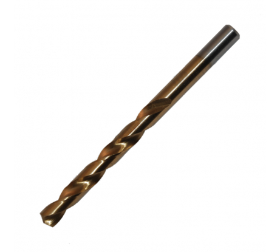
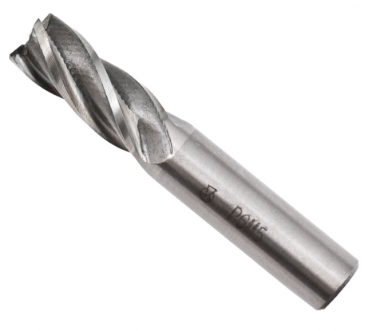
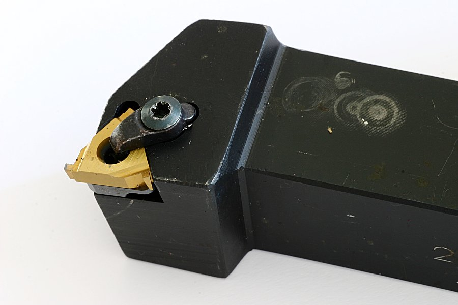

режущий инструмент, предназначенный для сверления отверстий в различных материалах
Сверла
Фрезы
это режущий инструмент, который имеет одно или несколько зубьев
Резцы
это режущий инструмент, предназначен для обработки деталей различных размеров, форм, точности и материалов
